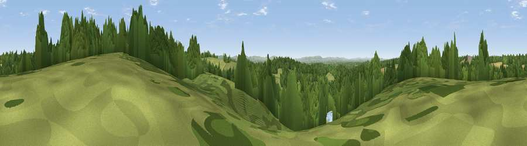

Viewpoint near Warninglid
#30962 in England · top 58% of its area beats it · near WarninglidThe view, rendered

A 360° render of this exact spot computed from the terrain model, tree cover and land cover — summer colours, afternoon light, calibrated against photographs of famous viewpoints. Real trees, hedges and buildings will differ in detail.
The panorama
Grey silhouette: terrain skyline in each direction (720 bearings, Earth curvature and refraction included). Dashed green: skyline with trees (+15 m) and buildings (+8 m) as obstacles. Blue strip: how far the ground is visible on each bearing.
Where the view opens
Wedge length = distance to the farthest visible ground on that bearing (vegetation-aware). Rings at 10, 25 and 50 km.
What fills the view
49% woodland · 39% grassland · 12% cropland
Angular shares of the visible panorama (visual magnitude), not map area. Landscape diversity 0.43 (0–1 Shannon).
Key numbers
More beautiful places nearby
The staircase of upgrades: each row has a higher view potential than everything closer. Driving times are estimates from straight-line distance, calibrated against real road routing — check an actual route before setting out.
| Place | Direction | Drive | Score |
|---|---|---|---|
| Viewpoint near Crabtree | SW · 2 km | ~6 min | 45.6 |
| Hampshire Hill | WNW · 5 km | ~12 min | 49.1 |
| Viewpoint near Balcombe | NE · 7 km | ~14 min | 49.7 |
| Sharpenhurst Hill | WNW · 11 km | ~21 min | 54.1 |
| Viewpoint near Kingsfold | NW · 11 km | ~22 min | 55.0 |
| Wolstonbury Hill | SSE · 13 km | ~23 min | 79.6 |
| Edburton Hill | S · 15 km | ~27 min | 82.3 |
| Viewpoint near Steyning | SSW · 17 km | ~30 min | 82.6 |
51.01927, -0.22886 · source: screening · position refined by local search. Computed location — check access rights before visiting.